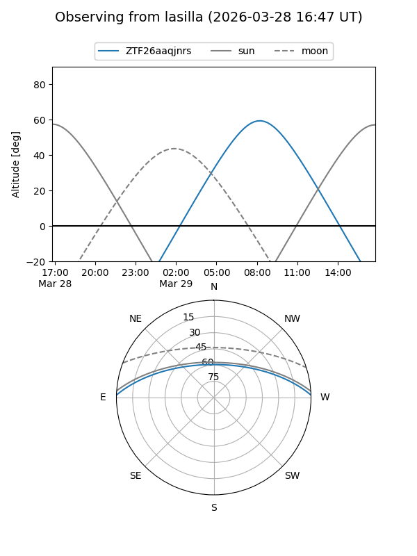
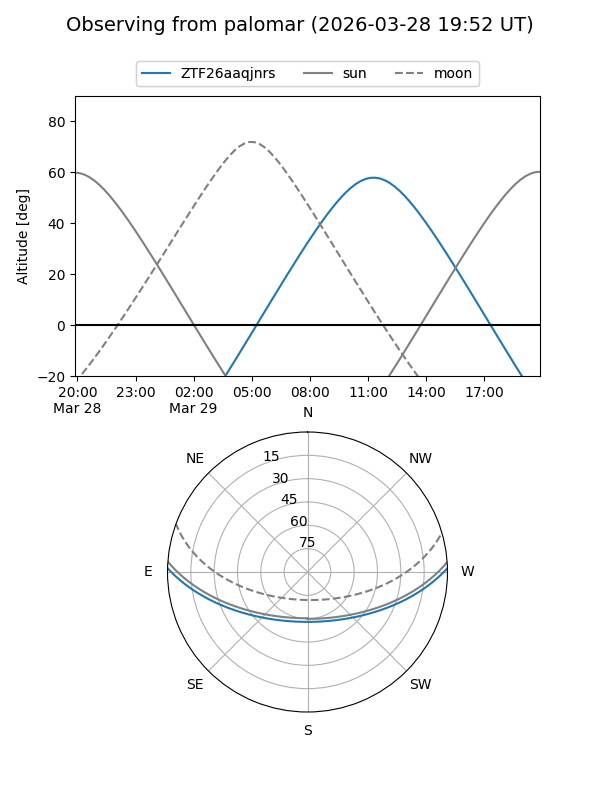

ZTF26aaqjnrs
Target ZTF26aaqjnrs at 2026-03-29 13:48
Aliases and brokers:
FINK: link
Lasair: link
ALeRCE: link
alt names
ZTF26aaqjnrs (ztf,fink_ztf)
Coordinates:
equatorial (ra, dec) = 238.9521,+1.36656
equatorial (HMS+DMS) = 15:55:48.51,+01:21:59.61
galactic (l, b) = (10.6654,+38.89542)
Flags:
Photometry:
last ztfg=18.08
1 ztfg detections
Lightcurve
Visibility


Additional plots